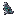
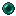
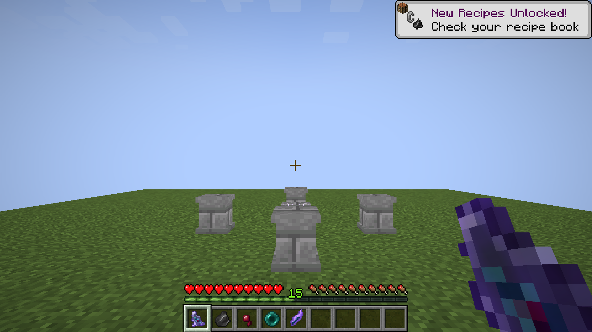
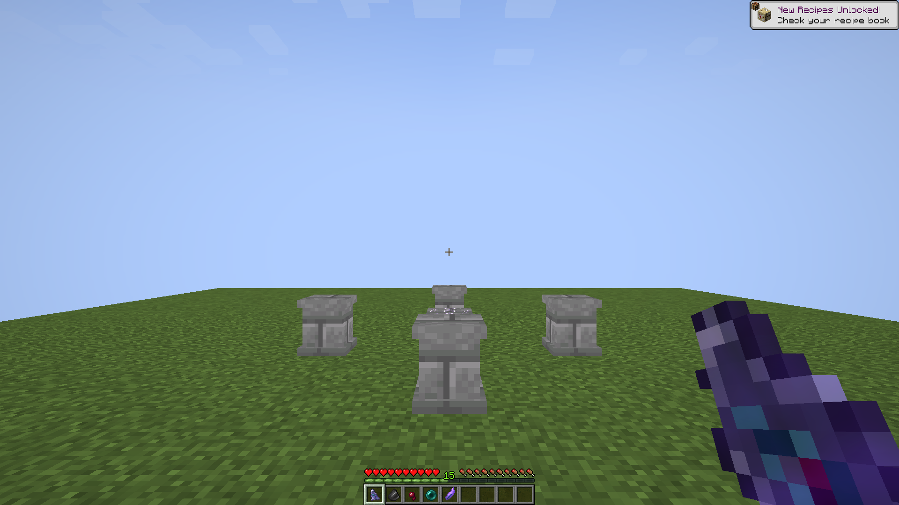

Homebound Eye · Flint
Grey chipped flint, an Ender Pearl teal-green eye and a red center.

Final inventory texture: 16 × 16 pixels. The view above enlarges the original pixels without smoothing.


Recipe: one Attunement Shard, one Spider Eye, one Ender Pearl and one Flint, on the four inner Plinths.
Actual Minecraft appearance


Design and verification notes · Final imagegen prompt · Original generated artwork